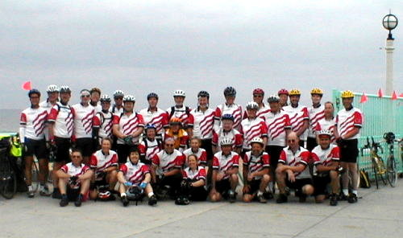

In the Summer of 2001, Dad and I bicycled across the country, from Los Angeles to Boston. This page is a commemoration of the adventure, for each of the 49 days I have posted both my log entry, dad's log entry, and a picture for the day. I hope you enjoy the site, relive the trip by reading the logs, peruse the photos, or drop us a note at klbrown@purdue.edu or browns@iquest.net.
If you are considering a cross-country trip or are shopping for the best company to tour with, I have to whole-heartedly recommend checking out CrossRoads Cycling. Very rarely do you find anyone who both enjoys and excels at their job to the level that Tracy, the leader and organizer, does every day. The staff is wonderful, they really know how to take care of both the rider and the bike, and riding with a supportive, tightly-knit group makes the tour a blast. If you want to know more, drop dad or me or dad an e-mail, of you can drop Tracy a line from the CrossRoads website.

Our group on the pier in Los Angeles, California
Final Statistics
These stats are from my records, your mileage may vary greatly. Also note that they don't
(yet) include the 169.6 miles from Liberal, KS to Great Bend, KS, which we missed for Lauren's graduation.
| Total Mileage |
3,386.78 miles |
| Total Vertical Climb |
84,180 feet |
| Total Riding Time |
232 hours, 35 minutes |
Log Index
Click on a day for my log entry, dad's log entry, and a photo from that day.
Day 48: June 29, Lexington, MA to Revere Beach
Day 47: June 28, Greenfield, MA to Lexington, MA
Day 46: June 27, Albany, NY to Greenfield, MA
Day 45: June 26, Little Falls, NY to Albany, NY
Day 44: June 25, Syracuse, NY to Little Falls, NY
Day 43: June 24, Canandaigua, NY to Syracuse, NY
Day 42: June 23, Hamburg, NY to Canandaigua, NY
Day 41: June 22, Erie, PA to Hamburg, NY
Day 40: June 21, Erie, PA
Day 39: June 20, Niles, OH to Erie, PA
Day 38: June 19, Wooster, OH to Niles, OH
Day 37: June 18, Marysville, OH to Wooster, OH
Day 36: June 17, Richmond, IN to Marysville, OH
Day 35: June 16, Indianapolis, IN to Richmond, IN
Day 34: June 15, Crawfordsville, IN to Indianapolis, IN
Day 33: June 14, Champaign, IL to Crawfordsville, IN
Day 32: June 13, Champaign, IL
Day 31: June 12, Springfield, IL to Champaign, IL
Day 30: June 11, Quincy, IL to Springfield, IL
Day 29: June 10, Kirksville, MO to Quincy, IL
Day 28: June 9, Chillicothe, MO to Kirksville, MO
Day 27: June 8, Saint Joseph, MO to Chillicothe, MO
Day 26: June 7, Topeka, KS to Saint Joseph, MO
Day 25: June 6, Abilene, KS to Topeka, KS
Day 24: June 5, Abilene, KS
Day 23: June 4, McPherson, KS to Abilene, KS
Day 22: June 3, Great Bend, KS to McPherson, KS
Day 21: June 2, (Indianapolis to) Dodge City, KS to Great Bend, KS
Day 20: June 1, (Indianapolis)
Day 19: May 31, Guymon, OK to Liberal, KS (to Indianapolis)
Day 18: May 30, Dalhart, TX to Guymon, OK
Day 17: May 29, Tucumcari, NM to Dalhart, TX
Day 16: May 28, Las Vegas, NM to Tucumcari, NM
Day 15: May 27, Santa Fe, NM to Las Vegas, NM
Day 14: May 26, Santa Fe, NM
Day 13: May 25, Albuquerque, NM to Santa Fe, NM
Day 12: May 24, Grants, NM to Albuquerque, NM
Day 11: May 23, Gallup, NM to Grants, NM
Day 10: May 22, Holbrook, AZ to Gallup, NM
Day 9: May 21, Flagstaff, AZ to Holbrook, AZ
Day 8: May 20, Flagstaff, AZ
Day 7: May 19, Cottonwood, AZ to Flagstaff, AZ
Day 6: May 18, Prescott, AZ to Cottonwood, AZ
Day 5: May 17, Wickenburg, AZ to Prescott, AZ
Day 4: May 16, Blythe, CA to Wickenburg, AZ
Day 3: May 15, Indio, CA to Blythe, CA
Day 2: May 14, Riverside, CA to Indio, CA
Day 1: May 13, Los Angeles, CA to Riverside, CA
Day 0: May 12, Los Angeles, CA
|